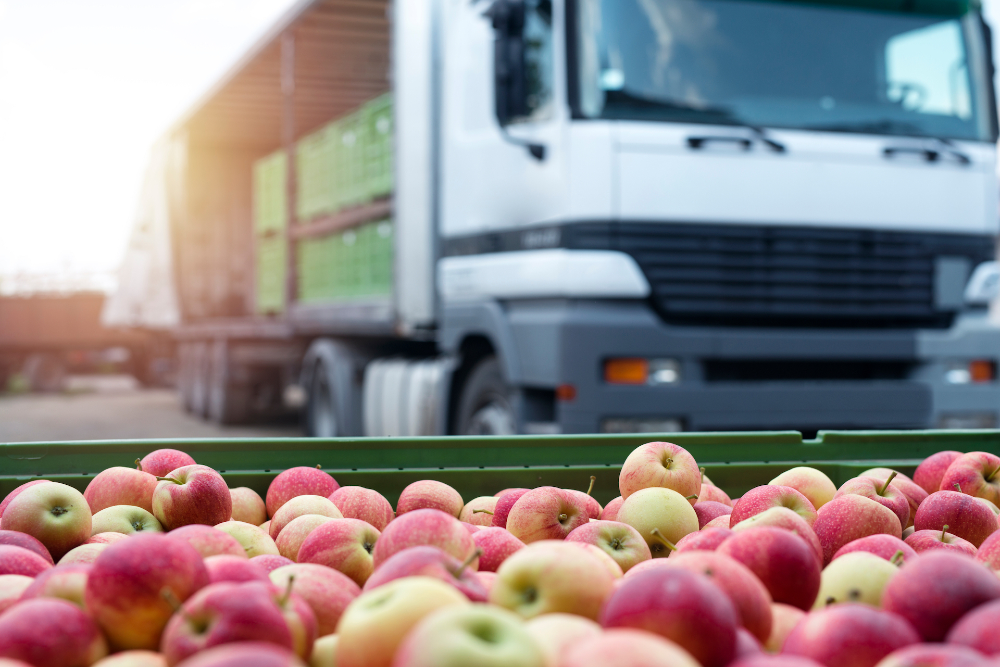
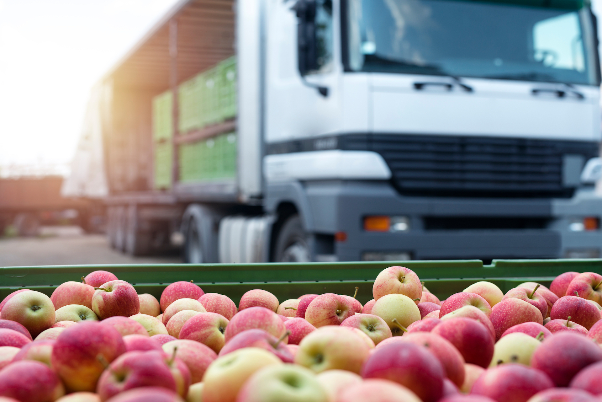

Let's talk about the money...
Without your financial support, we are unable to spread our vital message to the world. Many people are very much unaware of what a balanced diet consists in. Your financial input will allows us to work harder and better at spreading the awareness of the situation. This is the minimum.
Why else should you donate?
If you, too, believe in our message and its importance, you already know why! But if you still need convincing, consider the larger goals we could tackle down the line with your help:
In order for every person to eat an adequate amount of vegetables, we need the money to fund this effort. Growing vegetables takes time; they need to be packed, and shipped. Someone needs to stock them and others need to check their quality. We need to raise money to pay off all costs of vegetables so that everyone can access them. We wouldn't be healthy without vegetables - so donate today to show your appreciation.
 
